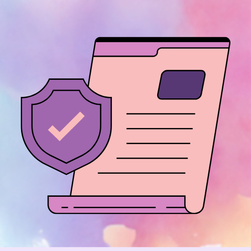

Who am I?
My name is David Neff. I am a 21 year old student at Florence-Darlington Technical College, majoring in both Network Systems Management and Web Applications and Programming. I have big dreams and the perseverence to see them through. This is a bit of extra information to get to know me:
Who am I?
My name is David Neff. I am a 21 year old student at Florence-Darlington Technical College. I am double majoring in Network Systems Management and Web Application Programming. I have had a strong interest in computer science topics since I was a child, inspecting elements of webpages and changing them on my school computers. I took a couple of courses in middle and high school learning simple code. This strengthened my interest and was the reason I decided to go for the majors I am in. After I finish my current courses, I plan to transfer to Coker University and get a bachelors degree in Cybersecurity.
I am hard working and have the perseverence needed to complete my goals. I have just one semester left to complete my degree and certificate programs and I know that if I put my mind to it I can make my dreams come true.
Hobbies

When I am not working on my computer science work, you can find me:
- Playing video games (usually Nintendo or Steam)
- Spending time with my friends and family
- Listening to music or watching new shows and movies
- Crocheting
Career Interests

Currently, I am interested in studying these topics for my future career:
- Web Development
- Programming
- Cybersecurity
Goals
The goals I have set for myself and my career at this time are:
- Graduate with a degree in the computer science field.
- Get certified in programming languages in prominent fields
- Get hired for a job in computer science.
- Become financially capable of supporting myself and my family.
Outside of school and work, I can be found at home with my family playing video games or relaxing while I crochet. I may also be out with friends going to the movies and finding ways to keep ourselves entertained in the middle of South Carolina. I really enjoy spending time with the people around me and making the most of my days. The connections I have with friends and family are very important to me and most of the things I do have them in mind. My goal is to one day be able to give back to my friends and family and help support them as they've supported me.
The connections I have with those around me are important to me. Most of what I do and what I have planned for myself is centered around making the lives of the people im close with better.